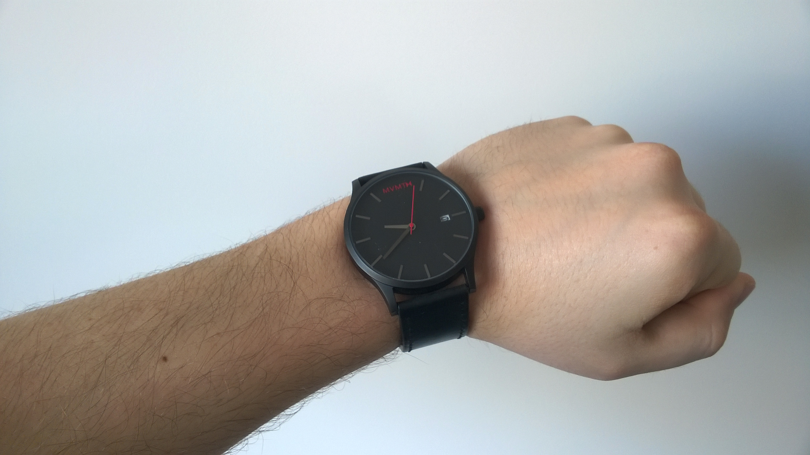
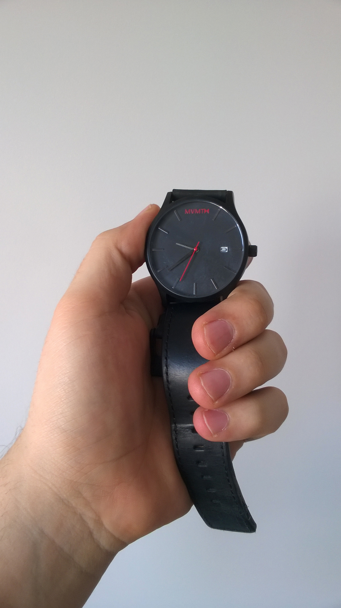
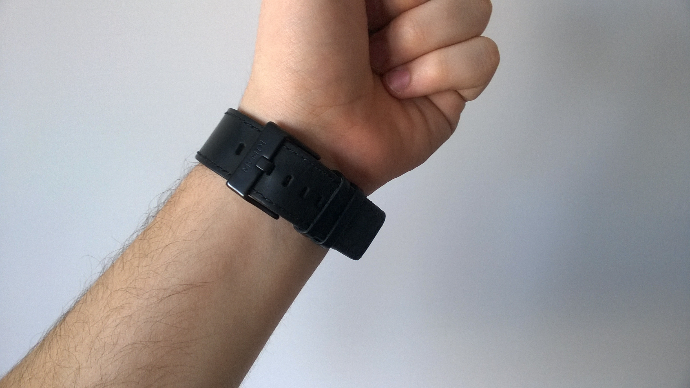
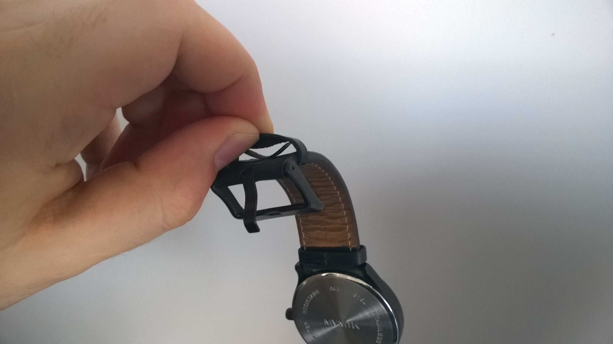

To be honest, I’ve totally forgot to mention this item in my previous blog post, but in the end, I’ve an opportunity to write a bit more about this product.

“We believe high quality products shouldn’t break the bank” - this is the main quote from the mvmt homepage - is it true? I’ll try to answer this question in this review.
A MVMT is a young, US-based company, which started their business somewhere in 2013. They’ve started an IndieGoGo campain, which ended as a total success.
MVMT’s main goal is to deliver the high quality product, but without inflated prices.
I’ve ordered my mvmt Classic Black + Black Leather model in the first quarter of 2014. The package was delivered to me after around 3 weeks (from US to Poland).
Almost every review of a watch that I’ve read contains also review of the package - it will be no different in my case.
Package itself is designed with minimalistic approach. The box contains only company and model name. Inside the carton box lays the second, material one that can be closed with zipper. It looks really nice, but in my opinion it breaks all this minimalistic feel of the product - this could be done in a better way.

MVMT finished product looks really astonishing. At first glance it delights with craftsmanship work and eye to the details.
Before I’ve bought the watch, I was afraid it will be too big for my wrist and will look awkward. Suprisingly, it turned out that is matched in every dimesion for me.
My model has 45mm Black Stainless Steel Case, 9mm thick. With black dial, red second hand & branding it looks simple and elegant.
There’s only one thing that bothers me here: analog watch date. On the main dial there’s a day of the month indicator, but it doesn’t distinguish between shorter and longer months. In the beginning of each month I have to check the date and eventually set it manually - can someone tell me if more expensive watches can do this automatically?
In overall, there’s nothing to complain about the case.

Unfortunately, You can’t say the same about the band.
My MVMT watch has (had) a 24mm Black leather band, with black stainless steel buckle (which highlights the size of the strap and masculinity of this model). I really adore the band design - finishing with a thick thread looks really neat. Unfortunately, lasting of this element is pretty poor.
I use my watch every single day. I put on and off it at least once a day. I don’t wear a watch during some dirty work (e.g. cleaning, gardening or other physical activity).
Desipe this, after around 1 year since I’ve purchased watch, the band began to sour.
Here’s the example:

As You can see, the free loop began to unstick and tear appart. The strap itself also began to be rugged on both sides and deformate.
I began to search after something similiar to original band, but without success. After some time I’ve managed to order a bit more delicate model (not from MVMT) and replaced it. Now I only miss the black steek buckle - it was an awesome detail :)
In the end, I really like the MVMT watches. They’re clean & minimalistic apperance really speaks to me. Only the strap of the watch could be made with better longevity. The watch itself (a case) is still like a brand new, just taken out of the box.
I recommend this product for everyone, who likes the minimalism and purity in watch design.
Totally worth the price.
– ł.